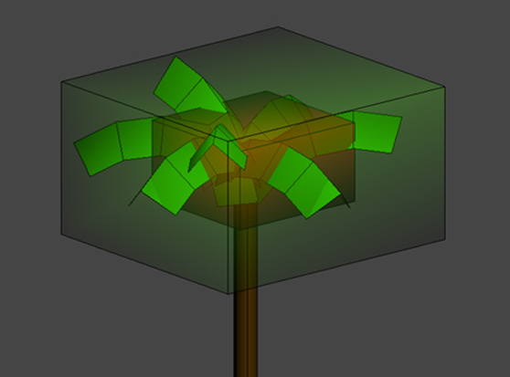
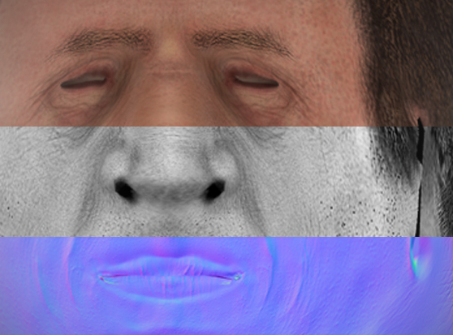

CRYENGINE uses many different asset types to deal with the complexity of simulating the real world as realistically as possible. Some of the most common asset types used in CRYENGINE are .cgf (Crytek Geometry Format), .mtl (Material) and .dds (Directdraw Surface) textures, however most users will mainly interact with the .cgf standard geometry format and will have to assign materials.
Once you start to advance and become involved with animations, then you will have to handle more asset types - the 4 main categories are listed below:
- Geometry
- Textures and Materials
- Audio
- Animation
- UI
If you do not see your asset in the Asset Browser, then you can generate the .cryasset file creation on all files by going to the Asset Browser and RMB-clicking in the folder area to generate the specific metadata for assets in that folder.
Geometry

Textures

Below are some of the most common asset file types that you will encounter inside of the Engine:
Geometry
- .cgf (Crytek Geometry Format): .cgf files are created in a 3D application and contain geometry data (grouped triangles, vertex attributes such as tangent space or vertex color, optional physics data, and optional spherical harmonics data).
- .chr (Character) - .chr files are created in a 3D application and contain skeleton data and physics proxies, which are used for hit detection and ragdoll simulation driven by animations.
- .skin (Skinned Render Mesh) - .skin files are created in a 3D application and contain skinned character data. They can be any asset that is animated with bone-weighted vertices such as humans, aliens, ropes, lamps, heads and parachutes. A .skin file includes the mesh, vertex weighting, vertex colors and morph targets.
Textures and Materials
- .tif (Tagged Image File Format) - .tif files should be created from within Photoshop using the CryTif plugin. (Learn how to install the plug-in here.) A TIFF Tagged Image File Format) file is a high quality 2D raster image plus additional metadata used by the Resource Compiler (RC). The RC transforms the .tif format into the target file format of the platform being used. While TIFF images can use LZW image compression, it is lossless (as opposed to lossy JPEG compression).
- .dds (DirectDraw Surface) - .dds files are texture files that are created by the RC from .tif source files. They can contain compressed and uncompressed data and are specifically optimized for each target platform. They are the optimal format for PC graphic cards.
- .mtl (Material) - .mtl files are created within the Material Editor in the Sandbox and material description (internally an .xml file). They contain settings for shaders, surface types, and references to textures. A .mtl file is a text file which holds all the information for the in-game material library. The material library is a collection of sub materials which can be assigned to each face/polygon of a geometry. You can for example have different surfaces such as metal, plastic, human skin within different IDs of the asset. Each of these sub materials can use different shaders and textures.
Audio
- .wav (Wave) - Wave files contain uncompressed sound data. Normally the build process filters .wav files out because they should not be used at run-time, but only as high quality sources.
- .ogg (OGG-VORBIS) - OGG files contain compressed sound data encoded in OGG-Vorbis. Currently they are only used on the PC for music and will eventually be replaced by specific FSB files.
- .fdp (FMOD Project) The .fdp file is an XML-based project file for the FMOD Designer tool. This is shipped optionally, but needed for the SoundBrowser in Sandbox.
- .fev (FMOD Runtime Project) The .fev file is a binary file that is required for run-time loading of FMOD event data. It contains all of the necessary metadata for sound events.
- .fsb (FMOD SoundBank) SoundBank files contain sound data in a specific format. For the Xbox360 they are typically encoded with the XMA format. On the PS3 the .mpeg format is used. FSB files are used for sound events, but also for music on consoles and in the future will be used for voice files as well.
Animation
.cga (Crytek Geometry Animation)
The .cga file contains pivot-based animated hard body geometry data. That means we don't use a skinned geometry for this asset type and still use animated rigid parts of an Entity in the Engine. This is the asset type to use for Vehicles since it allows animations like opening a door or any animation which doesn't use parts bending like skinned geometries for characters. The .cga file is created in a 3D application. The parts will be linked to each other in a hierarchy and will have a main root base. It only supports directly linked objects and does not support skeleton based animation (bone animation) with weighted vertices. Works together with .anm files.
.anm (Animation)
The .anm file is created in a 3D application and contains animation data for .cga objects. Each CGA file with more then one animation uses .anm files to move the individual parts of the CGA object. If there is only one animation for the object, it will be stored within the CGA file as the default animation in the Character Editor. .anm files are used to group different rigid body animations. For example, you can group landing gear coming down separately from the hatch to the cockpit opening.
.cdf (Character Definition File)
The character definition file is created in the Character Editor in Sandbox. It contains the reference to a .chr file and its attachments (can be .chr or .cgf).
.chrparams (Character Parameters File)
For a (skeletal) character in the game, there are certain definitions that have to be made in a single unified XML file-structure called a .chrparams file. The .chrparams file has the same name as the character file to which it refers. Please see The AnimEvents and Tracks Database Files document for more information.
.i_caf (Intermediate Character Animation File)
The intermediate character animation file contains the animated bone data for a specific character. The .i_caf files can be exchanged between characters with similar bone structures. The intermediate character animation file stores animation in uncompressed format and is used in production. Such files are created with DCC plugins, see Exporting Animations for details.
.animsettings (Animation Settings)
The animation settings file contains per-animation compression settings. This is a sidecar file that is stored next to an .i_caf file and describes how it should be compiled by the Resource Compiler. Animation Settings are created by the Animation Import tool in Sandbox, see Exporting Animations.
.caf (Character Animation File)
Compressed representation of the i_caf format. This format uses lossy compression and such files are created either by Sandbox or during the asset build build. Such files are loaded by the engine at runtime.
.bspace (Blend-Space)
Blend space defines how multiple animation assets are blended together. Blend spaces are parameterized at runtime with locomotion parameters such as movement speed, movement direction, turning angle or slope. See Blend Spaces.
.comb (Blend-Space combination)
This allows combining multiple simpler blend-spaces into one, usually of a higher order.
.animevents (Animation Events Database)
This file stores a list of assets with timed event markups. A common usage is for footstep sounds. The event database can be created and modified in the Character Editor and gets mapped in the .chrparams file.
SkeletonList.xml (Skeleton Alias Table)
A table that maps skeleton aliases (used within .animsettings) to skeleton filenames. Skeleton structure information is needed during animation compression.
From engine version 5.6 onwards, the skeleton list is not used anymore.
DbaTable.xml (DBA Table)
Contains a list of .dba files (Animation Databases). For each Animation Database there is a list of .caf files that gets included.
.dba (Animation Database)
Such files are created by the Resource Compiler according to DbaTable.xml. They store multiple animation files and eliminate redundancy, providing additional lossless compression. Single .caf files are no longer needed unless they are on-demand assets. The database file must be set in the .chrparams file.
UI
- .fla (Flash Movie Authoring File) - These are editable movies or animations created with Adobe Flash; they are typically exported in .swf format for use on the Web. The FLA file is the editable project file saved by the Flash development program.
- .swf (Flash Format File) - Animation created by Adobe Flash. .SWF files are a compressed format exported from the source .FLA, and viewable in most web browsers with the Flash plugin. The .swf file can include text as well as both vector and raster graphics. Will play in web browsers that have the Flash plugin installed. Most Web browsers come with a recent version of the Flash plugin.
- .gfx (Compressed Scaleform-converted Flash File) - Scaleform GFx is a lightweight, fast image and vector graphics animation rendering engine, which is designed to take full advantage of modern 3D graphics hardware, yet be compatible with a wide range of systems. To complement the core rendering engine, Scaleform GFx contains a clean-room Flash player implementation allowing game developers to create user interfaces with the award winning Adobe Flash Studio.